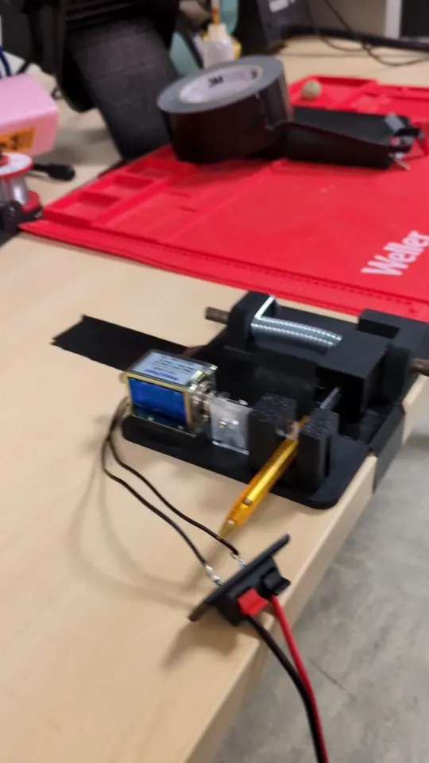
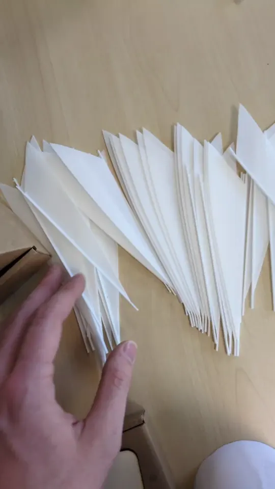
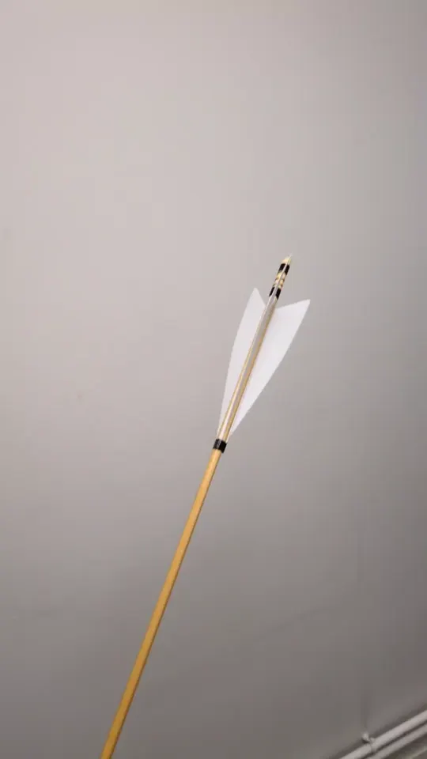
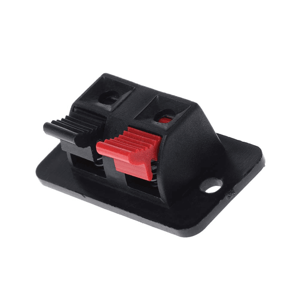
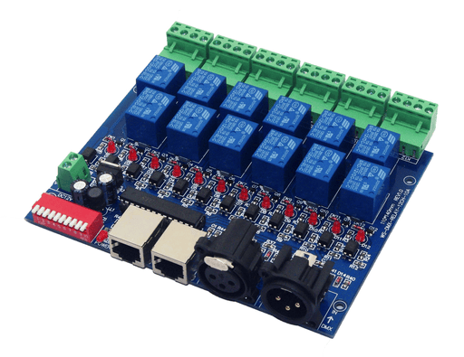
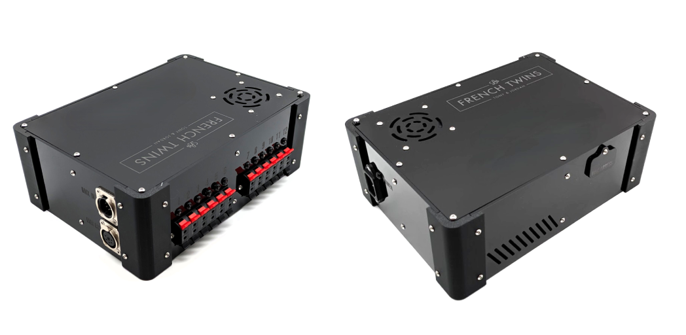
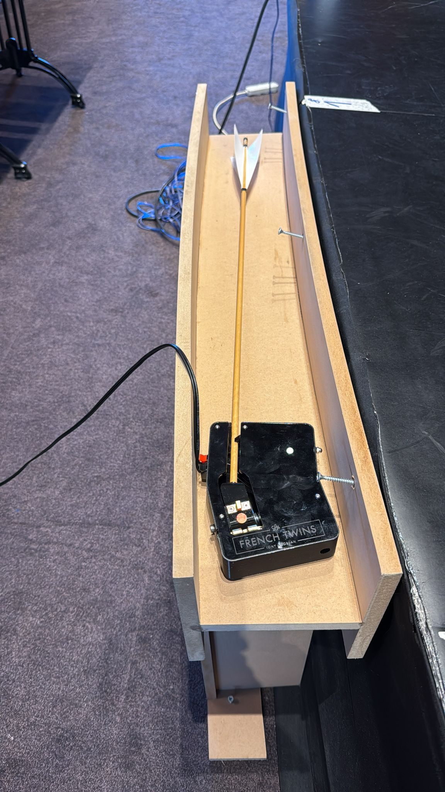
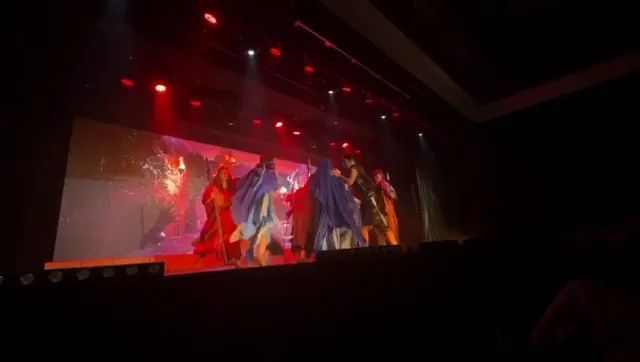

Flèches à apparition
Développement d’un ensemble de flèches à apparition, pour une illusion scénique dans une comédie musicale.
Présentation
Dans le cadre d’une consultation sur une comédie musicale, j’ai été sollicité par les French Twins, un duo de magiciens, pour la conception d’un ensemble de bases mécaniques permettant l’apparition de flèches sur scène.
Dans la mise en scène, ces flèches apparaissent après le tir d’une volée de flèches dans un contenu vidéo à l’arrière de la scène, donnant l’illusion qu’elles viennent se planter physiquement en avant-scène.
Chaque flèche est montée sur une base indépendante, activée via un hub de contrôle DMX, permettant une synchronisation précise avec les effets lumière.
Conception mécanique
Les bases de flèches sont imprimées en 3D (PETG) et intègrent :
- un ressort de torsion,
- un axe de rotation avec une pièce pivotante interchangeable
- un loquet coulissant maintenu par un solénoïde 12V
Premier test du mécanisme
Les flèches, achetées dans le commerce et modifiées, s’insèrent dans la base par une rotation d’un quart de tour, qui verrouille mécaniquement leur position. Une fois abaissées, elles sont maintenues en tension jusqu’au déclenchement électrique. Un loqueteau à bille réglable permet d’atténuer le rebond lors de l’éjection.


Les flèches sont surmontées d’ailerons imprimés en plastique flexible blanc (TPU), pour une plus grande durabilité et impact visuel que des plumes réelles.


Connectique et modularité
Les bases sont alimentées via des fiches audio standard, offrant une grande souplesse de longueur et un montage rapide sur scène. Ce choix garantit une connectique robuste, détachable, et facilement remplaçable.

Chaque base peut être installée indépendamment, avec une longueur de câble adaptée à son emplacement.
Contrôle par DMX
Un hub de contrôle dédié (similaire a un switchpack) permet de piloter jusqu’à 12 bases via DMX512. Une valeur supérieure à 127 sur un canal envoie une impulsion 12V à la base concernée.
J’ai utilisé pour cela une carte électronique du commerce ainsi qu’une alimentation 12V 30A.

Le hub est configuré par DIP switches pour définir l’adresse de départ, les sorties suivantes étant affectées automatiquement aux canaux consécutifs.
Le tout est integré dans un boitier composé de pièces imprimées et de carters découpés et gravés au laser. Une LED orange signale chaque déclenchement actif.

Intégration scénique
Les bases sont conçues pour être dissimulées en position couchée dans un coffrage scénique frontal. Lors du déclenchement, les flèches surgissent verticalement, créant l’effet d’une apparition.

Effet

Guide d’utilisation
Pour aider mes clients à comprendre le fonctionnement de mon dispositif, j’ai rédigé un guide d’utilisation en anglais.
Outils logiciels
- Onshape (CAO)
- Chataigne (Tests et développement)
Technologies utilisées
- Impression 3D
- Découpe Laser
- Contrôle DMX512